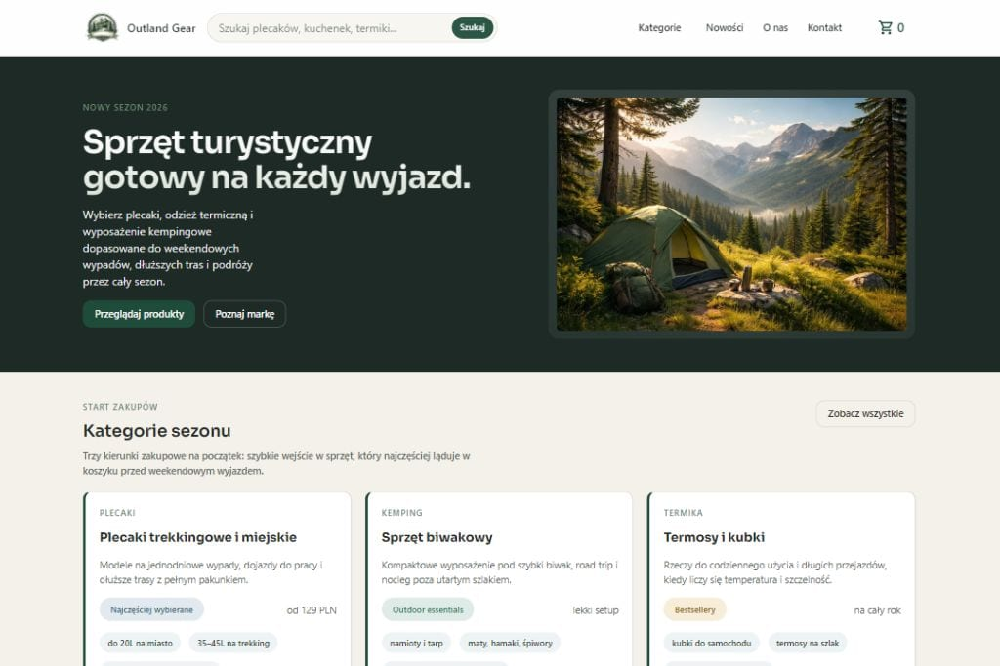

01
Outland Gear
Projekt sklepu e-commerce ze sprzętem outdoorowym i turystycznym, zaprojektowany pod mocną ekspozycję produktu, czytelną ofertę i nowoczesny odbiór marki.
Przegląd projektu
Outland Gear rozwija kierunek nowoczesnego sklepu internetowego dla branży outdoor i travel, który łączy charakter marki z uporządkowaną strukturą sprzedażową.
Projekt pokazuje, jak prezentować sprzęt turystyczny i podróżniczy w sposób wizualnie dopracowany, ale jednocześnie prosty w odbiorze i gotowy do dalszej rozbudowy.
W sklepach z takim asortymentem liczy się nie tylko atmosfera marki, ale też szybka orientacja w ofercie, kategoriach i wyróżnionych produktach. Outland Gear stawia na czytelny rytm sekcji, mocne kadrowanie oferty i spokojną hierarchię treści, która wspiera decyzję zakupową.
To dopracowany koncept portfolio, który może być dalej rozwijany o filtry, kolekcje sezonowe, landing pages kampanii, rozbudowane karty produktów lub sekcje poradnikowe związane z podróżami i aktywnością outdoorową.
E-commerceOutdoorTurystykaSklep online
Zakres i akcenty
Projekt został zbudowany tak, by sklep wyglądał nowocześnie i wiarygodnie, a przy tym prowadził użytkownika przez ofertę bez chaosu.
02
Czytelna prezentacja asortymentu
03
Przestrzeń na rozwój sklepu
Technologie i standard
Strona korzysta z lekkiego frontendu i architektury, która wspiera estetykę, wydajność oraz dalszy rozwój sprzedażowych sekcji sklepu.
Projekty e-commerce z segmentu outdoor potrzebują kontroli nad hierarchią, rytmem treści i jakością ekspozycji wizualnej. Statyczna warstwa frontendowa dobrze sprawdza się jako baza dla konceptowych sklepów, które można rozwijać etapami.
- semantyczna struktura sekcji wspierająca SEO i czytelność,
- responsywny układ dopasowany do mobile commerce,
- komponenty przygotowane pod rozbudowę katalogu i kampanii.
Prezentacja wizualna
Główny kadr projektu pokazuje kierunek dla nowoczesnego sklepu outdoorowego z wyraźnym produktem i uporządkowaną prezentacją oferty.

Dalszy krok
Przejdź do wersji live sklepu albo wróć do pełnego portfolio.
Ta podstrona jest częścią spójnego systemu detail pages, który można łatwo rozwijać o kolejne projekty i case studies.